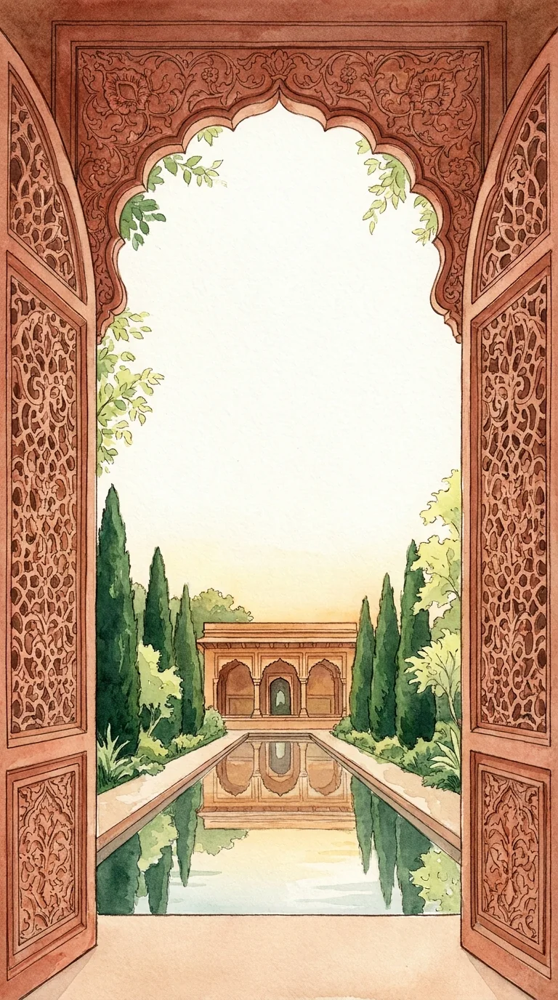
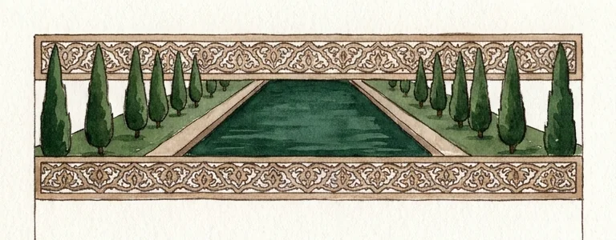
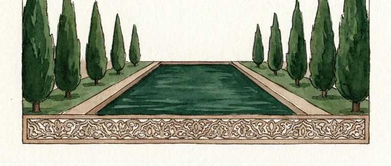
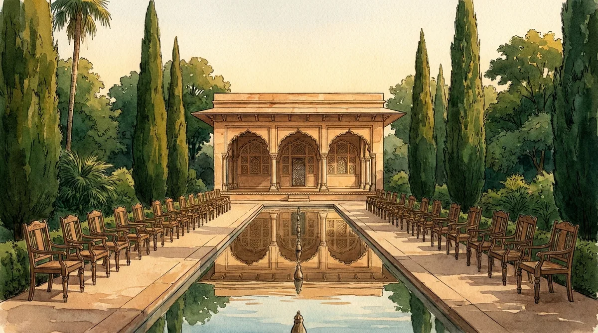
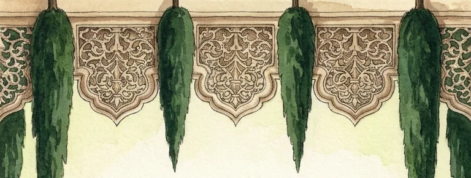
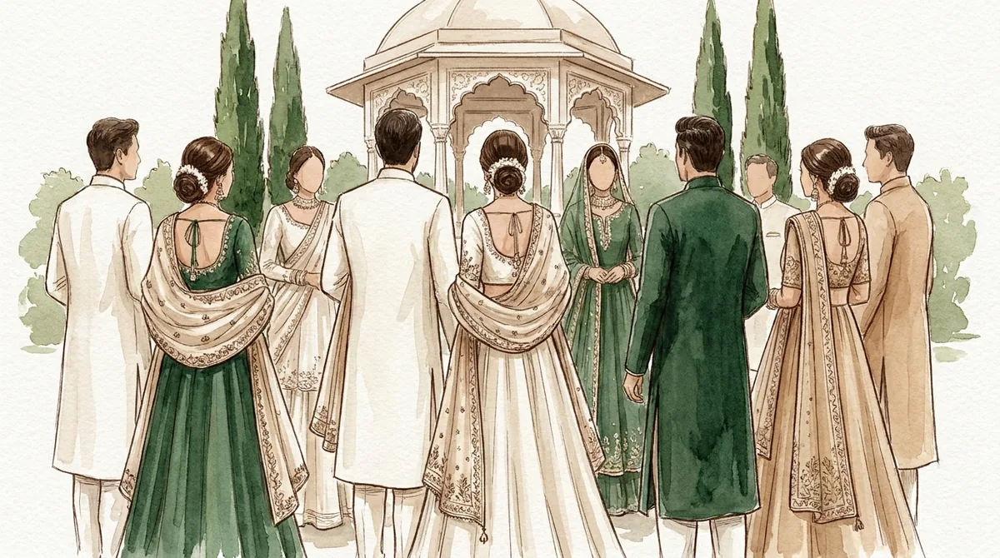
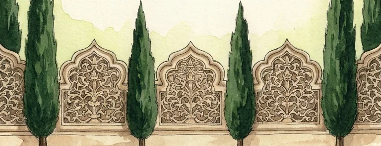
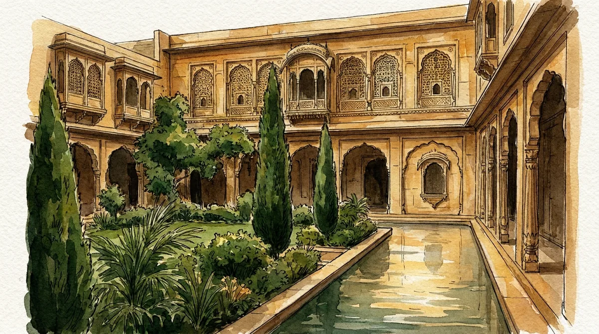
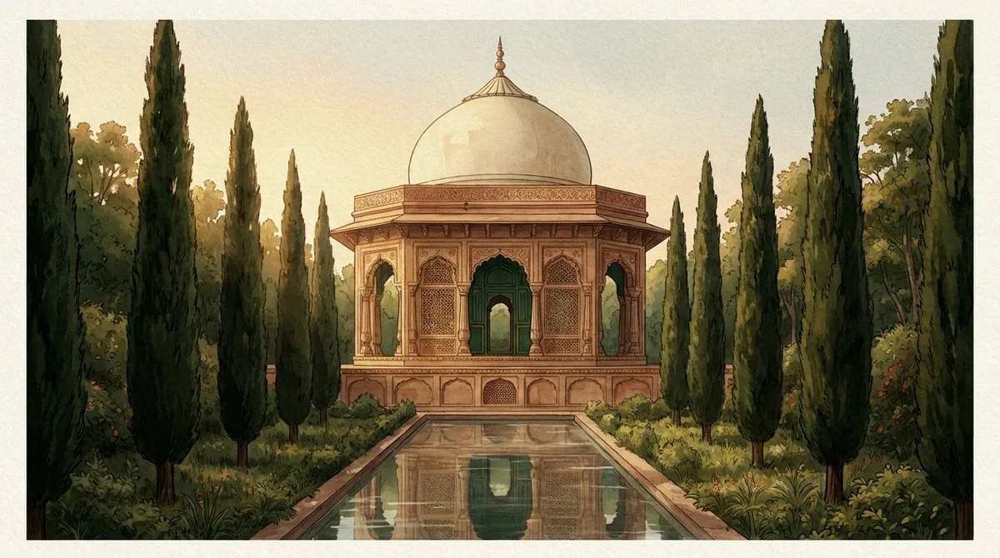

Bilal & Mahrukh

“And among His signs is that He created for you mates from among yourselves, that you may find tranquillity in them; and He placed between you affection and mercy.” Surah Ar-Rum · 30:21
The garden is open, the water is still, and the only thing missing is you.

The Garden Keeps One Secret
Take the brass key. Turn it in the lock, and the garden will tell you when.
Drag the key to the lock, or tap to turn it.
Three Evenings in the Garden
Every celebration has its own corner of the garden.


Garden Formal

Soft greens, warm cream, a little terracotta. Evenings turn cold — bring a shawl. Please avoid white.
Every event has its own palette

The Courtyard Awaits
We have held a block of rooms by the lake. To book, you only need to say you are with the Abbasi–Kiyani wedding.

Up to the Garden

Coaches
Someone will meet you
Once you are here
Leave a Note in the Garden
Please reply by 15 April. Rooms on the mountain fill up early.
Your reply is sealed
Your presence is the best gift we could receive.